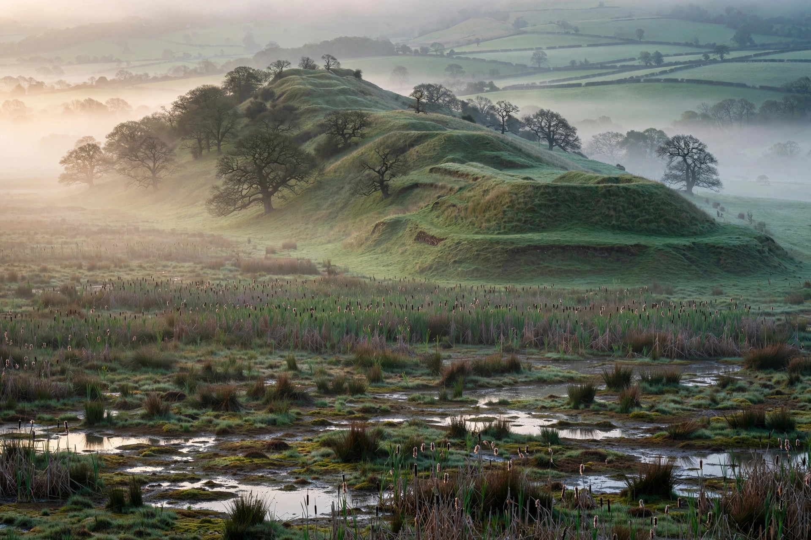

| Battle of Bosworth Field | |
|---|---|
 | |
| Date | 22 August 1485 |
| Location | Near Market Bosworth, Leicestershire, England |
| Result | Victory for Henry Tudor; Richard III killed; Tudor dynasty founded |
| Belligerents | House of York (royal army) · House of Lancaster / Tudor forces, with Stanley intervention |
| Commanders | Richard III †; Duke of Norfolk † · Henry Tudor; Earl of Oxford; William Stanley |
| Part of | Wars of the Roses |
The Battle of Bosworth Field (or Battle of Bosworth) was fought on 22 August 1485 between the Yorkist king Richard III and the Lancastrian claimant Henry Tudor, Earl of Richmond. Richard was killed, Henry was proclaimed king as Henry VII, and the battle is conventionally taken to mark the end of the Wars of the Roses and the beginning of the Tudor dynasty — and, in many histories, the end of the English Middle Ages.
Henry Tudor, living in exile in Brittany and France, sailed with French backing and a small army of French and Scots soldiers, Welsh supporters, and English exiles, landing at Milford Haven in Wales on 7 August 1485. He marched through Wales gathering recruits, then into the English midlands. Richard, mustering at Leicester and Nottingham, had the larger army, but the loyalty of great magnates was doubtful: the Earl of Northumberland and the brothers Lord Thomas Stanley and Sir William Stanley held aloof, awaiting the outcome.
The armies met near Market Bosworth. Henry's veteran commander, the Earl of Oxford, fought the Duke of Norfolk's division in a hard infantry struggle; Norfolk was killed. Seeing Henry relatively exposed with a small entourage, Richard made the battle's decisive gamble: a direct cavalry charge across the field to kill the pretender in person. The charge nearly succeeded — Richard killed Henry's standard-bearer and came within striking distance of Henry himself — before Sir William Stanley's men, intervening at last on Henry's side, surrounded and killed the king. Richard was the last English king to die in battle. Tradition says Henry was crowned on the field, with Richard's crown placed on his head by Lord Stanley.
The battle's precise location was disputed for centuries, with Ambion Hill the traditional site. A major archaeological survey (2005–2010) using systematic metal-detecting located the battlefield some 3 km to the southwest, near Stoke Golding, identifying the marsh in contemporary accounts and finding the largest group of cannonballs surviving from any medieval European battlefield — and a silver-gilt boar badge, Richard III's personal livery emblem, close to the marsh, plausibly lost where the king died.
Henry VII dated his reign from the day before the battle, making Richard's supporters retroactively traitors. He married Elizabeth of York in 1486, uniting the rival houses in the Tudor rose. Though Yorkist resistance continued — the last battle of the wars was Stoke Field in 1487 — Bosworth had settled who would rule England, and the Plantagenet line ended with Richard's death.
See also: Richard III · Henry VII · Wars of the Roses